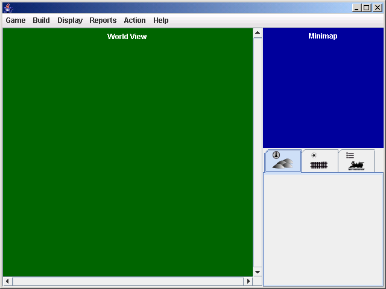
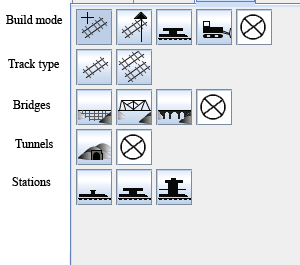

The main window has a menu bar, the world view, the minimap, and a tabpane.

The GUI components should display properly when the main window is 640 * 480 pixels or bigger. The table below shows the dimensions of the components in terms of the width (W) and height of the main window. The figures do not include space taken up by borders, scroll bars, tabs, menus etc.
|
Component |
Width |
Height |
|---|---|---|
|
Minimap |
200 |
200 |
|
Tab's content |
195 |
H - 300 |
|
World View |
W -230 |
H - 70 |
Pressing the tab key toggles keyboard focus between the world
view window and the tabpane's content. The tabs do not accept
keyboard focus when clicked.
|
Game Menu |
|
|---|---|
|
New Game |
|
|
Game Speed |
|
|
Save Game |
|
|
Load Game |
|
|
Quit |
|
| Build Menu |
|
|---|---|
| New train |
|
| Build industy |
|
| Improve Station |
|
|
Display Menu |
|
|---|---|
|
Regional display |
|
|
Track, trains and stations |
|
|
Area |
|
|
Detailed Area |
|
|
Options |
|
| Reports Menu |
|
|---|---|
| Balance Sheet |
|
| Income Statement |
|
| Networth Graph |
|
| Stocks |
|
| Leaderboard |
|
| Accomplishments |
|
|
Action menu |
|
|---|---|
|
Call Broker |
|
|
Retire |
|
|
Help Menu |
|
|---|---|
|
Controls |
|
|
Quick Start |
|
|
Manual |
|
|
About |
|
The world can be displayed at 4 zoom levels:
|
|
Tile Size |
|
Overview map |
|---|---|---|---|
| Local detailed |
30*30 pixels |
|
Visible |
| Local |
15*15 pixels |
|
Visible |
| Network |
Scaled so that all the player's stations are visible |
Shows trains, stations, and track but not geography |
Visible |
| Regional |
Scaled so the whole map is visible |
|
Hidden |
Shows the current year and month.
Shows wagons in each train and whether they are full or empty, the trains relative speed and destination. Double clicking a train on the roster (or pressing enter when the train roster has focus) or on the map opens the train report for the train.
There are 5 build modes (see the table and screenshot below).
|
Build mode |
Options visible when mode is selected |
Action |
|---|---|---|
|
build track |
Track type, bridges, and tunnels. |
When the cursor is moved, track is built. On clear terrain, the selected track type is built. On rivers, the selected bridge type is built (if a bridge type is selected.) On hills and mountains, tunnel is built if build tunnls is selected. |
|
upgrade track |
Track type and bridges |
Track and bridges are upgraded to the selected type when the cursor enters a tile. |
|
build station |
Stations |
|
|
bulldoze |
None |
When the cursor moves from a tile to a neigbouring tile, any track connecting the two tiles is removed. |
|
off |
None |
Nothing is built or removed when the cursor moves. |

The Build tab should not accept keyboard focus when the mouse is click on it. This is because doing so would cause the world view window to lose focus which is annoying when you are building track using the keyboard.
When a new game is started or a game is loaded, the build mode should default to 'build track' with single track, wooden trestle bridges, and tunnels selected.
The cursor can be in one of the following modes. The cursor should only be visible if the world view has keyboard focus. The cursor's appearance should indicate which mode it is in.
The initial cursor position is 0,0. However, if a game is loaded or a new game is started and the map size is the same as the last map size, then the cursor should take the position it had on the last map.
The cursor gets put into place-station-mode when the player selects a station type from the build tab.
Shows the radius of the selected station type.
Red when station cannot be built on selected square, white otherwise. This should be determined by whether building the station is possible, not merely whether there is track on the selected tile.
Pressing the LMB attempts to place the station. If the station is built, the cursor is returned to its previous mode; if the station is not built, the cursor remains in place-station-mode.
Pressing the RMB or pressing Esc cancels placing the station and returns the cursor to its previous mode.
Track can be built by dragging the mouse (moving the mouse with the LMB down). As the mouse is dragged, the proposed track is shown. Releasing the LMB builds the track. Pressing the RMB or Esc cancels any proposed track.
Track can be built by pressing the number pad keys.
Track can be removed by moving the cursor with the number pad keys.